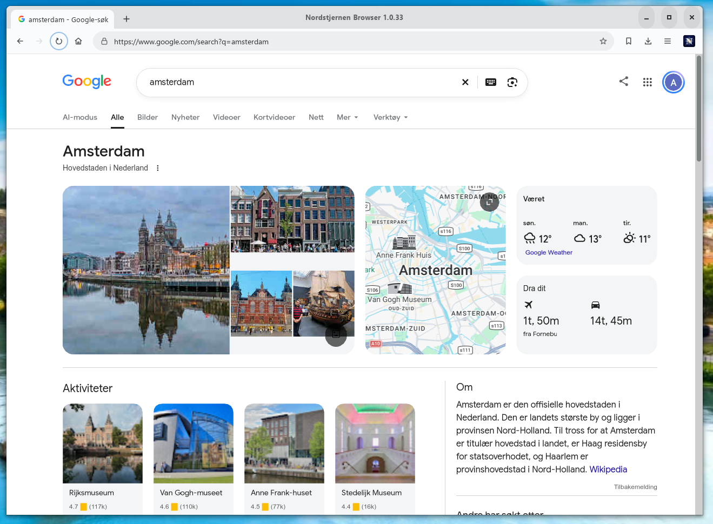

Nordstjernen Web Browser
Nordstjernen is a web browser, written from scratch in C, focused on supporting the HTML and CSS standards. It runs on Windows, macOS and Linux, with builds for Android, FreeBSD, NetBSD and the JVM. Nordstjernen is built in Norway.
Nordstjernen Browser version 1.0.33 released! MP4 video with H.264 and AAC decoded by the operating system, WebGPU on by default, a built-in MCP server so a local agent can drive the browser window, Temporal and the full Intl API in the JavaScript engine, CSS anchor positioning, the Streams standard, and a long run of real-site layout fixes. More info here.
Northstar Browser version 1.0.15 released! The minimalist GPL sibling — streaming video through Media Source Extensions (AV1, VP9 and H.264) since 1.0.13, a sandbox that refuses executable memory to the engine, and about 3,800 lines of dead and duplicated code removed. About Northstar · More info here.
Southstar Browser version 1.0.0 released! The Rust version of Nordstjernen, now entirely Rust, with page JavaScript on the Boa engine. About Southstar · More info here.


HTML Standard. Behaviour is measured against the spec text, section by section, not against another browser — 141 spec rows fully implemented, 31 partial and 0 absent across WHATWG HTML sections 1–16. No element or API row is fully absent any more: every one is implemented, partial, or a deliberate non-goal. Against the Web Platform Tests (October 2026) it passes 91.5% of the html/, dom/, url/ and related subtests (151,974 of 166,164) and 73.2% of the css/ subtests (110,540 of 151,048), and QuickJS passes 82,243 of the 82,248 test262 tests it runs. See docs/HTML-compatibility.md.
Secure. Process-per-tab design — each tab runs in its own sandboxed renderer process, talking to the UI over IPC and shared-memory tiles. The renderer runs under seccomp + Landlock on Linux, a Seatbelt profile on macOS, and process mitigation policies on Windows · no JIT, in either the JavaScript or the WebAssembly engine.
Minimalism. The core engine is about 245,000 lines of project C and headers, excluding the vendored libraries and generated assets — small enough for one person to read and audit end-to-end.
Capable. JavaScript on QuickJS (an in-tree quickjs-ng fork with Temporal, the full Intl API and decorators in the engine, or Fabrice Bellard’s original QuickJS) with Canvas 2D, WebCrypto, Streams, Service Workers and the Navigation API · WebAssembly via WAMR’s fast interpreter · WebGL 1 & 2, and WebGPU on by default since 1.0.31 · inline <video> — MPEG-1, WebM through FFmpeg, and since 1.0.32 MP4 with H.264/AAC decoded by the operating system — with WebVTT captions, and HLS and DASH streams fed through Media Source Extensions · in-engine SVG · presentation MathML · CSS anchor positioning and scroll-driven animations · on-device safe browsing against a local blocklist.
Agent remote control. Since 1.0.33, nordstjernen --mcp is a built-in MCP server that lets a local agent read and drive the browser window — tabs, a page outline, clicks, typing, screenshots and JavaScript. It is off until allowed in Settings, listens on loopback only, needs a token, and shows a toolbar badge while connected. The browser itself still has no AI assistant.
Prints. Since 1.0.23, Ctrl+P lays the page out for paper and hands the sheets to the operating system's own print dialog — CUPS on Linux, the Win32 dialog on Windows, the Cocoa panel on macOS — so no printing code is written per platform and no dependency is added. @media print matches, @page sets the sheet size and its margins, and break-before, break-after and break-inside decide where a sheet may end. --dump=print:FILE renders the same pagination to a multi-page PDF without a printer. Since 1.0.24 printing works in the default process-per-tab mode, not only under --single-process.
Fast. Desktop builds shape text through ns-pango, a Pango fork that caches finished glyph strings and font metrics across layouts — on a table-heavy page it serves 92% of shaping requests and cuts layout time by 24%. Regular-expression search skips positions that cannot start a match, the way V8's Irregexp does, and a page on an origin that does not speak QUIC is upgraded to HTTP/3 through the alt-svc cache instead of stalling on a connect timeout: Acid3 loads in 2.2 seconds rather than 15.5.
Private. No telemetry and no update pings. Since 1.0.21 the client hints identify Nordstjernen as itself rather than impersonating Chrome, and --private starts a private-browsing session. Cookies are partitioned, and the safe-browsing check never leaves your machine.
Free software. Since 1.0.28 Nordstjernen is dual-licensed: use, modify and redistribute it under the GNU GPL, version 3 or later, or under the Nordstjernen Source License 1.0, at your option.
Nordstjernen has no JIT so it is much more secure, and can still be fast enough. It ships no telemetry of any kind, and deliberately includes no AI assistant and no AI-style web APIs.
the Northstar browser
Northstar is the minimalist sibling of Nordstjernen: a single-window, single-page, single-process desktop browser built from the same clean-room C engine, licensed under the GNU GPL, version 3 or later. It keeps the standards-first engine — lexbor, quickjs-ng (no JIT), ns-pango, WAMR, Wuffs — in about 188,000 lines of original C, with WebExtensions support, while leaving out tabs, per-tab renderer processes, WebGL and WebGPU: the page engine runs on its own thread inside the one browser process. It renders SVG in-engine, decodes WebP and APNG, plays MPEG-1 <video> and, since 1.0.13, streaming video through Media Source Extensions and plain MP4 and WebM files (AV1, VP9 or H.264 with AAC or Opus), prints through the system print dialog, and greets you with a sunny ark comic and a classic Mozilla-style toolbar. It runs on Linux, macOS and Windows — on Windows from the Microsoft Store — behind a Landlock filesystem sandbox and a default-deny seccomp filter on Linux, which since 1.0.15 also refuses executable memory wherever page content runs.
Read the full Northstar documentation » · or see the comparison table below for how the two browsers differ.
the Southstar browser
Southstar is the Rust version of Nordstjernen. Rather than starting from an empty repository, it started from the working browser: the Nordstjernen C codebase, its full history included, trimmed to the desktop (Linux, Windows, macOS, FreeBSD and NetBSD) and ported to Rust module by module while it kept running. In October 2026 the last of the project’s C went, the QuickJS-ng engine included: all of Southstar’s own code is now Rust — about 330,000 lines in some 145 crates — and C remains only in the system libraries it links. Page JavaScript runs on Boa, a JavaScript interpreter written in Rust (no JIT), which passes all 52,133 test262 tests outside test/staging; HTML is parsed by its own Rust parser, HTTP/2 and TLS (rustls, with post-quantum key exchange) run in Rust, and WebAssembly runs on the wasmi interpreter. Southstar 1.0.0 was released on 18 October 2026, with a portable Linux zip and .deb packages for Debian 13, Debian forky and sid, and Ubuntu 24.04 and 26.04. How the port was done is in docs/rust-port.md.
Read more about the innovations in the Nordstjernen web browser.
news
- ·
Nordstjernen 1.0.33 released — a built-in MCP server for local agents,
text-wrap: balance, seventy more CSS properties, streaming XMLHttpRequest responses, sturdier workers and service workers, a run of table, float and inline layout fixes, and security fixes from a source review. Release notes » - · Southstar 1.0.0 released — the Rust version of the browser reaches 1.0, with packages for Debian 13, Debian forky and sid, and Ubuntu 24.04 and 26.04. Release notes »
- ·
Northstar 1.0.15 released — no executable memory for the engine, a Landlock fix for
~/.Xauthoritysessions, opaquefile:origins, a livedocument.cookie, and about 3,800 lines of dead and duplicated code removed. Release notes » - ·
Nordstjernen 1.0.32 released — MP4 with H.264/AAC through the operating system’s decoders, smoother video, CSS anchor positioning, scroll-driven animations, the Streams standard, and Temporal,
Intland decorators in the JavaScript engine. Release notes » - · Northstar 1.0.14 released — video streaming fixes and security fixes from a source-wide review. Release notes »
- ·
Nordstjernen 1.0.31 released — WebGPU on by default, smooth 60 fps YouTube video, real-time Web Audio, HTML inside SVG
foreignObject, XPath 1.0, and range inputs drawn as sliders. Release notes » - · Southstar 0.9.9 released — the first release of the Rust version, followed by 0.9.10 and 0.9.11. Releases »
- · Northstar 1.0.13 released — streaming video through Media Source Extensions and plain MP4 files (AV1, VP9 and H.264 with AAC or Opus), video decoding on its own thread, Google Maps, XPath, and much cheaper restyling. Release notes »
- · Nordstjernen 1.0.30 released — a full WebGPU surface, the common WebGL extensions, YouTube relayout 3–6× faster, WAMR’s fast interpreter, and sitebench, a site-by-site comparison against Chrome. Release notes »
- ·
Nordstjernen 1.0.29 released — sharp pages on HiDPI screens, smooth tiled scrolling, the clipboard in text fields, Google sign-in and Gmail, text that flows around floats, Chrome-matching fonts on macOS, a security audit, and a
.debfor each of Ubuntu 24.04, Ubuntu 26.04 and Debian 13. Announcement » · Release notes » - · Nordstjernen 1.0.28 released — dual-licensed under the GNU GPL v3+ or the NSL, a redesigned window and built-in pages, Google’s search pages running, and faster style resolution, script parsing and container-query layout. Announcement » · Release notes »
- ·
Nordstjernen 1.0.27 released — DuckDuckGo as the default search, History that records, a
.deband a portable Linux zip on every release, frames and workers that follow the HTML event model, and MSE video again. Announcement » · Release notes » - · Northstar 1.0.12 released — an 8 MB engine stack so deep pages no longer crash, and a build on Fabrice Bellard’s original QuickJS. Announcement » · Release notes »
- · Northstar 1.0.11 released — Northstar on the Microsoft Store. Release notes »
- · Nordstjernen 1.0.26 released — full grid layout, popovers and dialogs per the HTML standard, a faster cascade, and a round of security fixes. Announcement » · Release notes »
- · Northstar 1.0.10 released — text measurements that outlive relayout, partial repaint, an idle page that stays idle, popovers, grid fixes and canvas security. Announcement » · Release notes »
- · Nordstjernen 1.0.25 released — a 40% faster restyle, the classic Northstar toolbar and splash, the full container-query grammar, and transitions and animations on every property. Announcement » · Release notes »
- · Northstar 1.0.9 released — a sunny ark comic on about:start, a Mozilla-style toolbar, address-bar suggestions, and a full-screen notice. Announcement » · Release notes »
- · Nordstjernen 1.0.24 released — flexbox and grid rebuilt against the specifications, the page itself scroll-snaps, printing in process-per-tab mode, text selection that behaves, registered custom properties, a JavaScript off switch, and a painted about:start. Announcement » · Release notes »
- ·
Northstar 1.0.8 released — transitions and animations on every property with a Web Animations API,
border-image, thebackgroundshorthand parsed layer by layer,position: fixedthat stays put, and lexbor 3.0.1. Announcement » · Release notes » - · CVE-2026-85046 and Northstar — the actively exploited Chrome V8 type confusion does not apply to Northstar or Nordstjernen: no V8, no JIT, no elements kind to confuse, no write barrier to skip. Read the analysis »
- ·
Nordstjernen 1.0.23 released — the browser prints, with
@media print,@pageand page breaks; correctoffsetLeft/offsetTop, flexbox static positions, CSS Scroll Snap, and quickjs-ng 0.16.1. Announcement » · Release notes » - · Northstar 1.0.7 released — printing, a rebuilt about:start sky and earth, CSS Scroll Snap, frames that reach their parent, and Linux binaries. Announcement » · Release notes »
- · Nordstjernen 1.0.22 released — real-site layout fixes, a rebuilt grid, faster text and regular expressions, a reworked toolbar, and a much more capable Android app. Announcement » · Release notes »
- · Northstar 1.0.6 released — a rebuilt grid, an indexed CSS cascade, faster text through ns-pango, Web Audio that renders, and relative colour syntax. Announcement » · Release notes »
- · Nordstjernen 1.0.21 released — Media Queries Level 4, in-engine SVG, HLS and DASH streaming, a redesigned about:start, and honest client hints. Announcement » · Release notes »
- · Northstar 1.0.5 released — in-engine SVG, WebP/APNG, MPEG-1 video playback, and much better HTML, CSS and JavaScript compatibility. Announcement » · Release notes »
- · Northstar 1.0.4 released — a maintenance release. Release notes »
- · Nordstjernen 1.0.20 released — WebGL on by default, a blinking caret, site-compatibility and memory-safety work. Announcement » · Release notes »
- · Northstar 1.0.3 released — the GPL-licensed single-process edition: Media Queries Level 4, CSSOM used values, and use-after-free fixes. Announcement » · Release notes »
- · Nordstjernen 1.0.19 released — a big step in web-standards conformance, a new animated about:start splash, and a fresh iOS port. Announcement » · Release notes »
- · Nordstjernen 1.0.18 released — a maintenance release. Announcement » · Release notes »
- · Nordstjernen 1.0.17 released — a maintenance release. Announcement » · Release notes »
- · Nordstjernen 1.0.16 released — a maintenance release. Announcement » · Release notes »
- · Nordstjernen 1.0.15 released — a maintenance release. Announcement » · Release notes »
- · Nordstjernen 1.0.14 released — a maintenance release. Announcement » · Release notes »
- · Nordstjernen 1.0.12 released — a maintenance release. Release notes »
- · Nordstjernen 1.0.11 released — a maintenance release. Announcement » · Release notes »
- · Nordstjernen 1.0.0 released — the first stable release. Announcement » · Release notes »
specifications
Three browsers, one clean-room engine lineage. Nordstjernen is the flagship multi-tab browser; Northstar is the minimalist GPL-licensed single-process edition; Southstar is the same browser rewritten in Rust.
Swipe the table sideways to see all three browsers.
| Nordstjernen 1.0.33 | Northstar 1.0.15 | Southstar 1.0.0 | |
|---|---|---|---|
| version | 1.0.33 — released 18 October 2026 · release notes | 1.0.15 — released 18 October 2026 · release notes | 1.0.0 — released 18 October 2026 · release notes |
| character | flagship browser · multi-window, multi-tab | minimalist edition · one page per window, no tabs | the Rust version · multi-window, multi-tab |
| language | C · ~245 kLOC clean-room · GTK 4 shell · Java/JVM binding via JNI · fully auditable | C · ~188 kLOC original · GTK 4 shell · fully auditable | Rust · ~330 kLOC in some 145 crates · GTK 4 shell · C only in the system libraries it links |
| architecture | process-per-tab — each tab in its own sandboxed renderer process, IPC + shared-memory tiles | single process — the page engine on its own thread inside the browser process | process-per-tab — each tab in its own sandboxed renderer process, IPC + shared-memory framebuffers |
| html / css | lexbor (parser, WHATWG URL, selectors) · the engine’s own cascade and layout | lexbor v3.0.1 (parser, WHATWG URL, selectors) · the engine’s own cascade and layout | its own Rust HTML parser (rust/html5) · the engine’s cascade and layout, ported to Rust |
| javascript | in-tree quickjs-ng fork — bytecode interpreter, no JIT · Temporal, Intl and decorators in the engine · original QuickJS selectable with -Dquickjs=quickjs |
quickjs-ng at 9b06171 (after v0.17.0) — bytecode interpreter, no JIT · original QuickJS selectable with -Djs_engine=quickjs |
Boa (in-tree fork) — Rust interpreter, no JIT · all 52,133 test262 tests outside staging pass |
| text | ns-pango on the desktop — a Pango fork with a process-wide shaping cache · system Pango on Android | ns-pango — the same fork | ns-pango — the same fork |
| webassembly | WAMR fast interpreter behind the WebAssembly JS API |
WAMR fast interpreter (vendored subset) | wasmi — a pure-Rust interpreter |
| webgl / webgpu | WebGL 1 & 2 · WebGPU over wgpu-native, on by default since 1.0.31 and switchable in Settings | — | WebGL 1 & 2 · experimental WebGPU behind --enable-webgpu |
| images | Wuffs (PNG / APNG / GIF / BMP / JPEG / lossless WebP) · libwebp (lossy and animated WebP) · AVIF and JPEG XL (optional) · ICO and SVG rendered in-engine · inline PDF (optional) | Wuffs v0.4 (PNG / APNG / GIF / BMP / JPEG / WebP) · AVIF (optional) · SVG rendered in-engine | pure-Rust decoders (PNG / APNG / GIF / BMP / JPEG) · libwebp · AVIF and inline PDF (optional) · ICO and SVG rendered in-engine |
| media | MPEG-1 via pl_mpeg · WebM (VP9/VP8 + Opus/Vorbis) via FFmpeg · MP4 with H.264/AAC decoded by the operating system · HLS and DASH through Media Source Extensions · WebVTT captions · SDL2 audio | MPEG-1 via pl_mpeg · Media Source Extensions and plain MP4/WebM files — AV1 (libdav1d), VP9 (libvpx), H.264 (OpenH264, optional), AAC-LC and Opus · MP3, MP2, Ogg audio · Web Audio graph | MPEG-1 via a Rust port of pl_mpeg · WebM (VP9/VP8 + Opus/Vorbis) via FFmpeg · HLS and DASH through Media Source Extensions · WebVTT captions |
| printing | Ctrl+P through GtkPrintOperation — CUPS, Win32 or Cocoa · @media print, @page and page breaks · --dump=print:FILE to PDF |
Ctrl+P through GtkPrintOperation — CUPS, Win32 or Cocoa · @media print, @page and page breaks · --dump=print:FILE to PDF |
printing and save-to-PDF |
| extensions | initial support for simple, page-facing WebExtensions | WebExtensions — local extensions with content scripts, packaged resources, storage.local, i18n and declarativeNetRequest |
initial support for simple, page-facing WebExtensions |
| ai | no AI assistant and no AI-style web APIs, by design · an opt-in, loopback-only MCP server lets a local agent drive the window | none — no AI-style web APIs, by design | none — no AI-style web APIs, by design |
| ui | GTK 4 (≥ 4.22.1 on Windows, ≥ 4.14 elsewhere) · tabs, page zoom that reflows, light/dark/system themes · HiDPI rendering · tiled, GPU-composited scrolling · 40 UI languages | GTK 4 (≥ 4.14; ≥ 4.22.1 on Windows) · page zoom, dark theme following the desktop · 40 UI languages | GTK 4 (≥ 4.14; ≥ 4.22.1 on Windows) · tabs · 13 UI languages so far |
| network | libcurl ≥ 8.5 · HTTP/2, upgraded to HTTP/3 through the alt-svc cache · optional in-tree nghttp2 backend, with HTTP/3 over QUIC via ngtcp2 + nghttp3 · Vary-aware HTTP cache |
libcurl ≥ 8.5 · HTTP/2, upgraded to HTTP/3 through the alt-svc cache when the linked libcurl provides it · request deduplication and reusable preloads | an in-tree Rust HTTP client · HTTP/1.1 and HTTP/2 over rustls (TLS 1.3 and 1.2, post-quantum key exchange) · Vary-aware HTTP cache |
| hardening | sandboxed renderer processes · seccomp + Landlock on Linux, Seatbelt on macOS, process mitigation policies on Windows · no JIT | Landlock filesystem sandbox + PR_SET_NO_NEW_PRIVS · default-deny seccomp filter on Linux, refusing executable memory to the engine since 1.0.15 · no JIT |
sandboxed renderer processes · seccomp + Landlock on Linux · memory-safe Rust · no JIT |
| privacy | no telemetry · client hints identify Nordstjernen, not Chrome · --private browsing mode · partitioned cookies · HSTS · CSP · SRI · on-device safe browsing |
no telemetry · client hints identify Northstar · --private browsing mode · partitioned cookies · HSTS · CSP · SRI · on-device safe browsing |
no telemetry · --private browsing mode · partitioned cookies · HSTS · CSP · SRI · on-device safe browsing |
| standards | 141 spec rows fully implemented, 31 partial, 0 absent · WHATWG HTML sections 1–16 · Web Platform Tests (October 2026): 91.5% of html/, dom/ and url/ subtests, 73.2% of css/ · test262: 82,243 of 82,248 |
behaviour measured against the spec text, section by section · Web Platform Tests: per-area scores in docs/compliance.md | 140 spec rows fully implemented, 31 partial, 0 absent · 95% of its tracked Web Platform Tests slice · test262: 52,133 of 52,133 |
| platforms | linux (gtk) · alpine (musl) · windows · macos · android · java/jvm · freebsd · netbsd | linux · macos · windows | linux · windows · macos · freebsd · netbsd |
| license | dual-licensed since 1.0.28, at your option: GNU GPL v3 or later — free software · or NSL-1.0 → MIT after 10 years, inspired by the Functional Source License | GNU GPL v3 or later — free software | the same dual license as Nordstjernen: GNU GPL v3 or later or NSL-1.0, at your option |
| source | github.com/nordstjernen-web/nordstjernen-browser | github.com/nordstjernen-web/northstar-browser | github.com/nordstjernen-web/southstar-browser |
| docs | innovations in Nordstjernen · architecture guide | the Northstar Browser page · build instructions | how the Rust port was done |
download
Latest release: Nordstjernen 1.0.33 — released 18 October 2026, with a portable Linux zip, a Debian/Ubuntu package for Ubuntu 24.04, Ubuntu 26.04 and Debian 13, a macOS disk image for Apple silicon, and the source. Windows is on the Microsoft Store, Android on Google Play, and the openSUSE, Alpine and Java packages from 1.0.23 are on the download page.
Northstar 1.0.15 — released 18 October 2026 — is on GitHub as GPL source and on the Microsoft Store for Windows; the most recent Linux binaries (a portable zip, an AppImage and a Debian package) are from 1.0.7. Northstar downloads »
Southstar 1.0.0, the Rust version — released 18 October 2026 — has a
portable Linux zip and .deb packages for
Debian 13,
Debian forky,
Debian sid,
Ubuntu 24.04 and
Ubuntu 26.04 on
GitHub.
languages
English · 中文 · हिन्दी · Español · Français · العربية · বাংলা · Português · Русский · اردو · Bahasa Indonesia · Deutsch · 日本語 · Kiswahili · मराठी · తెలుగు · Türkçe · தமிழ் · Tiếng Việt · 한국어 · Norsk